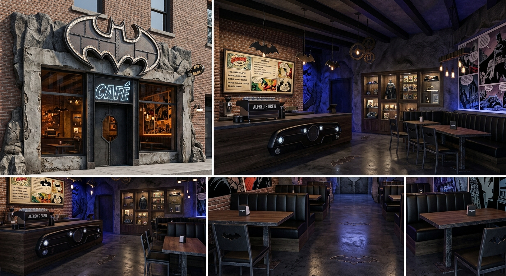

Sobre nosotros
Nuestra historia
El origen de la baticueva
The Batcave Cafe nacio con la idea de fusionar el universo de los comics con la pasion por la cafeteria de especialidad. Lo que empezo como un sueño de fans, se convirtio en un punto de encuentro unico donde la cultura y la gastronomia de calidad se unen.

Nuestros pilares
- Calidad premium: granos seleccionados de origen y reposteria artesanal recien horneada
- Ambientacion inmersiva: salones diseñados con tematicas de heroes y villanos
- Servicio de excelencia: un equipo apasionado listo para brindarte la mejor experiencia